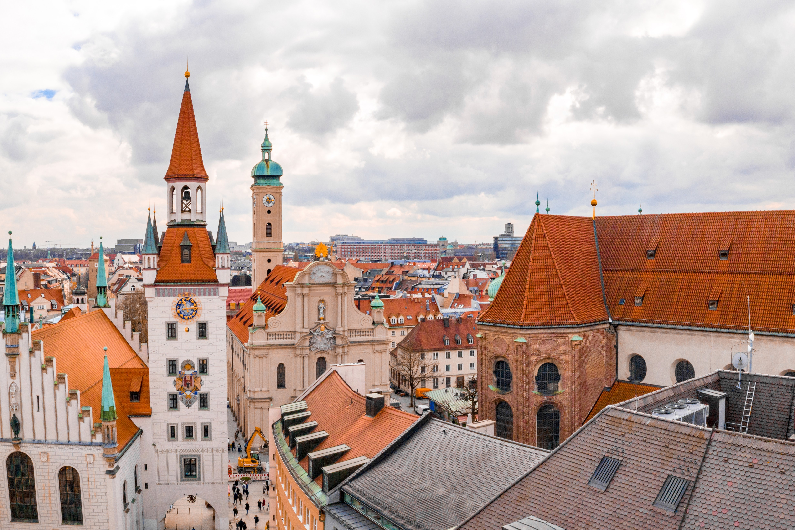

European Destinations
France

Paris
Known as the "City of Love" and the "Fashion Capital of the World", Paris is a destination for all. Visit landmarks such as the Eiffel Tower and the Notre-Dame Cathedral. Explore cute cafes, bakeries, and markets where you can enjoy macarons and fresh baguettes. Last but not least, spend a day wandering the world-class Louvre Museum.
Nice
Tucked away along the French Riviera, Nice is a lovely blend of nature and culture. Walk along pebbled beaches and blue waters. The city is very charming and quaint, lined with colorful buildings. Don't forget to visit the Musee Matisse!
Spain

Barcelona
Home of legendary architect Antoni Gaudi, get prepared to be transported to the vibrant city of Barcelona. Visit the Sagrada Familia which has been under contruction for nearly a decade. Explore the Gothic Quarter and stroll the beaches. Enjoy true Mediterranean culture in Barcelona.
Ibiza
Famous for its legendary nightlife, Ibiza is located of the East coast of Spain, in the Mediterranean sea. However, the archipelago offers more than just nightlife. Go snorkling, swimming, or experience UNESCO world heritage site Dalt Vila
Germany
Berlin
The capital of Germany, Berlin offers everything from history, to art, to nightlife. Historical sites include Checkpoint Charlie, the Holocaust Memorial, and fragments of the Berlin wall. They even have an entire island dedicated to Museums- Museum Island. And my personal favorite, the robust EDM scene.
Munich
Known primarily for Oktoberfest which is filled with beer gardens and festivities. One of the oldest beer halls in the world is located here, called Hofbrauhaus. World class museums include the Deutsches Museum and the Pinakothek art galleries. Munich is a charming city that leaves you wanting to return for more.